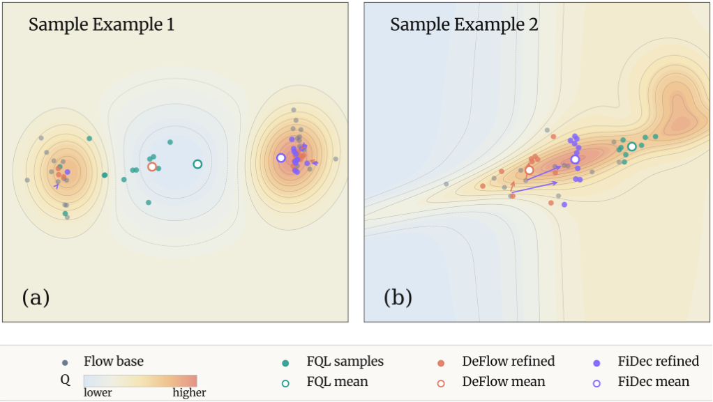
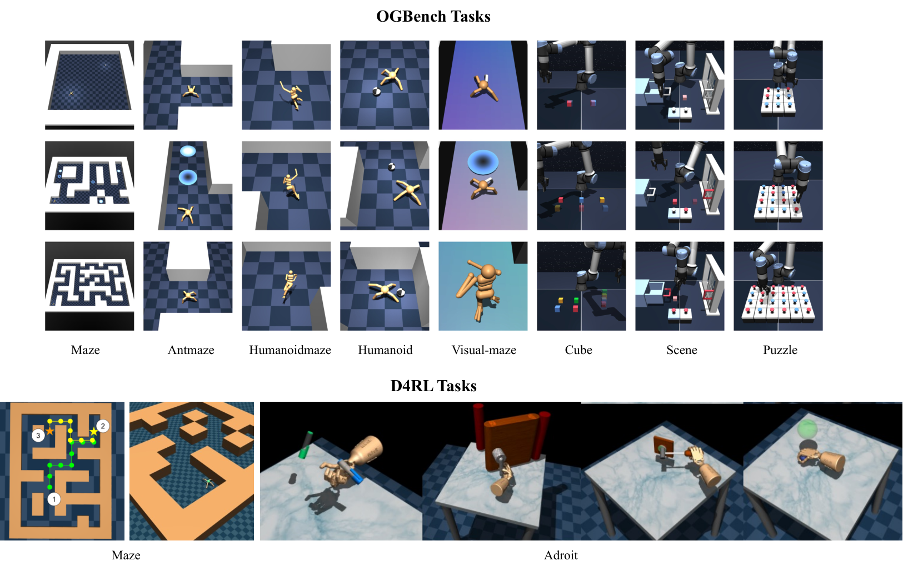
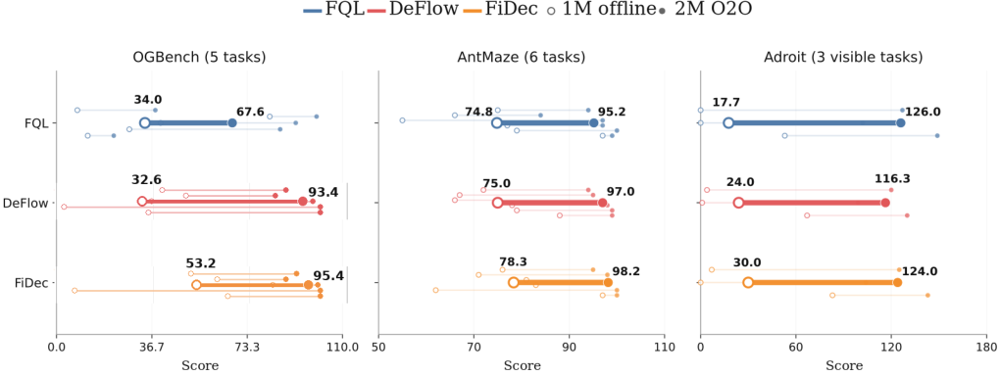

Accepted at NeurIPS 2026 · Poster
Fisher DecoratorRefining Flow Policy via a Local Transport Map
The idea
Policy improvement has a geometry.
Flow matching can represent rich, multimodal behavior. Refining that behavior with an isotropic distance penalty can overlook which directions stay close to the data distribution.
Fisher Decorator (FiDec) refines an existing flow policy through a residual local transport map. A local quadratic approximation of the KL constraint introduces the Fisher information matrix, giving the refinement an anisotropic metric. The method estimates this metric from the flow velocity and uses it to constrain policy improvement.
We study this approach on OGBench and D4RL, covering state-based control, visual manipulation and offline-to-online fine-tuning.
Read the full abstract
Recent advances in flow-based offline reinforcement learning (RL) have achieved strong performance by parameterizing policies via flow matching. However, they still face critical trade-offs among expressiveness, optimality, and efficiency. In particular, existing flow policies interpret the L₂ regularization as an upper bound of the 2-Wasserstein distance (W₂), which can be problematic in offline settings. This issue stems from a fundamental geometric mismatch: the behavioral policy manifold is inherently anisotropic, whereas the L₂ (or upper bound of W₂) regularization is isotropic and density-insensitive, leading to systematically misaligned optimization directions. To address this, we revisit offline RL from a geometric perspective and show that policy refinement can be formulated as a local transport map—an initial flow policy augmented by a residual displacement. By analyzing the induced density transformation, we derive a local quadratic approximation of the KL-constrained objective governed by the Fisher information matrix, enabling a tractable anisotropic optimization formulation. By leveraging the score function embedded in the flow velocity, we obtain a corresponding quadratic constraint for efficient optimization. Our results reveal that the optimality gap in prior methods arises from their isotropic approximation. In contrast, our framework achieves a controllable approximation error within a provable neighborhood of the optimal solution. Extensive experiments demonstrate state-of-the-art performance across diverse offline RL benchmarks.
Method
A small displacement.
A more informed direction.
Keep the behavioral flow. Learn a local refinement shaped by Fisher information.
- 01
Model the behavior
A flow policy learns the action distribution in the offline dataset and produces a base action.
a = μβ(s, z) - 02
Read the local geometry
The flow velocity provides a score estimate, from which the local Fisher metric is constructed.
I(s, a) = ∇ log πβ ∇ log πβ⊤ - 03
Decorate the action
A residual map improves the action value under a Fisher-weighted displacement constraint.
Ts(a) = a + δ(s, a)
Why the metric matters
Different directions.
Different costs.
An isotropic L₂ penalty treats directions uniformly. The Fisher metric weights a displacement by the local structure of the behavioral distribution.
The paper’s illustrative examples compare how FQL, DeFlow and FiDec refine the same base distribution in multimodal and curved-support settings.
Explore the derivation

Experiments
From navigation to manipulation.
73 offline tasks across OGBench, D4RL and visual control.

Flow-policy comparison
All 12 methods in the paperReported means ± deviations from Table 2, averaged over eight random seeds. Each OGBench row aggregates five tasks. Scores are reproduced from the paper.
OGBench · 50 tasks
| Task category | FQL | DeFlow | FiDec ours |
|---|---|---|---|
| AntMaze · large | 79 ± 3 | 81 ± 11 | 87 ± 1 |
| AntMaze · giant | 9 ± 6 | 5 ± 7 | 13 ± 4 |
| HumanoidMaze · medium | 58 ± 5 | 57 ± 29 | 72 ± 2 |
| HumanoidMaze · large | 4 ± 2 | 5 ± 5 | 8 ± 3 |
| AntSoccer · arena | 60 ± 2 | 62 ± 20 | 64 ± 2 |
| Cube · single | 96 ± 1 | 90 ± 6 | 94 ± 1 |
| Cube · double | 29 ± 1 | 38 ± 22 | 43 ± 4 |
| Scene | 56 ± 2 | 51 ± 40 | 56 ± 1 |
| Puzzle · 3 × 3 | 30 ± 1 | 24 ± 38 | 43 ± 1 |
| Puzzle · 4 × 4 | 17 ± 2 | 4 ± 2 | 15 ± 1 |
D4RL · 18 tasks
| Task category | FQL | DeFlow | FiDec ours |
|---|---|---|---|
| AntMaze 6 tasks | 84 ± 3 | 81 ± 7 | 87 ± 1 |
| Adroit 12 tasks | 52 ± 1 | 34 ± 41 | 46 ± 2 |
Visual control · 5 tasks
| Task category | FQL | DeFlow | FiDec ours |
|---|---|---|---|
| Visual manipulation 5 tasks | 65 ± 2 | 59 ± 38 | 64 ± 1 |
Bold marks the highest reported mean among these three flow methods, including ties. It does not indicate statistical significance.
Beyond the offline dataset
Continue learning through interaction.
Offline-to-online fine-tuning on 14 tasks, starting from the offline-trained policy.


Official implementation
Try Fisher Decorator.
JAX / Flax implementation with OGBench and D4RL training entry points.
Start with an OGBench task
Prepare the dependencies described in the repository, then train FiDec with an explicit agent configuration. The dataset loader handles OGBench data.
Installation & full instructionsOnline fine-tuning currently supports state inputs. The training entry point rejects visual online runs.
WANDB_MODE=offline python main.py \
--env_name=cube-double-play-singletask-v0 \
--agent=agents/fidec.py \
--offline_steps=1000000 \
--seed=0Build on this work
Citation
BibTeX for the arXiv preprint. Accepted at NeurIPS 2026 · Poster.
@misc{cheng2026fisherdecorator,
title={Fisher Decorator: Refining Flow Policy via a Local Transport Map},
author={Xiaoyuan Cheng and Haoyu Wang and Wenxuan Yuan and Ziyan Wang
and Zonghao Chen and Li Zeng and Zhuo Sun},
year={2026},
eprint={2604.17919},
archivePrefix={arXiv},
primaryClass={cs.LG},
url={https://arxiv.org/abs/2604.17919}
}Acknowledgements
The research and core codebase are led by Xiaoyuan Cheng and Haoyu Wang. This repository partially builds on DeFlow: Decoupling Manifold Modeling and Value Maximization for Offline Policy Extraction. This work was supported by funding from Prof. Zhuo Sun.